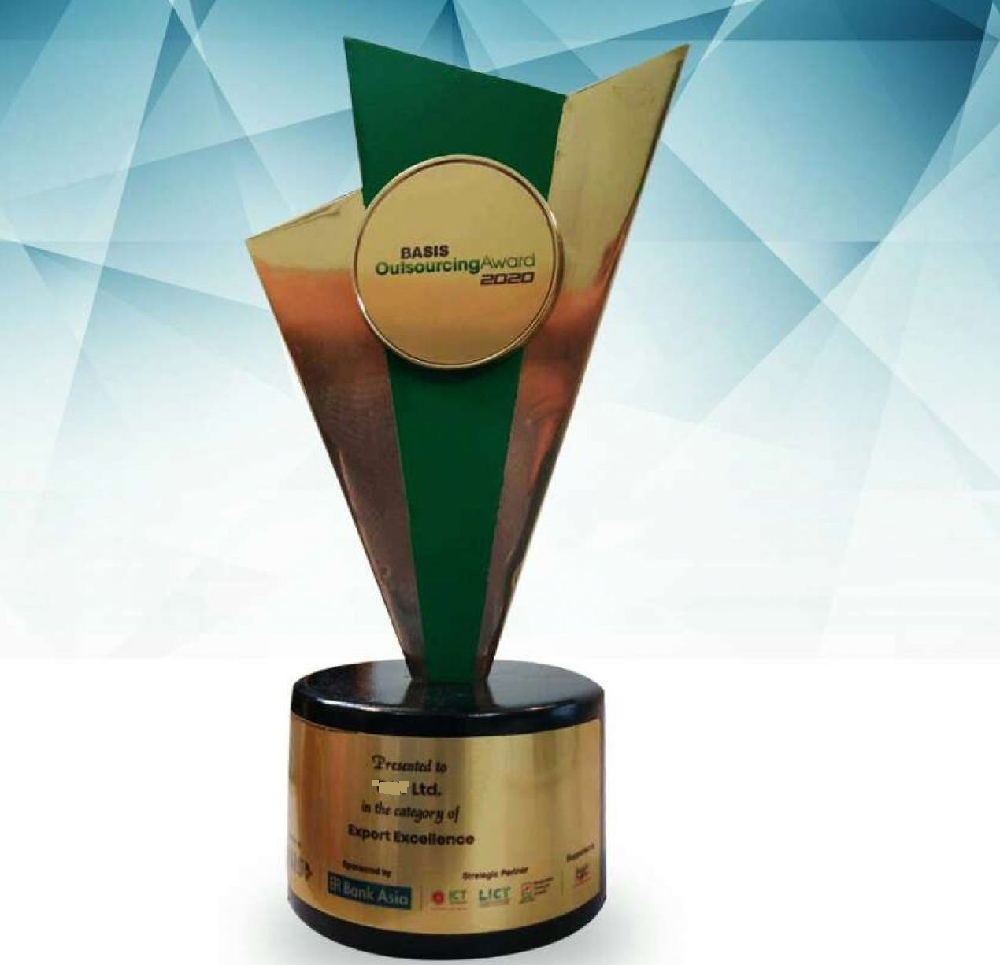

Congratulations to Cyber Software Bangladesh Ltd. for Receiving the “BASIS Outsourcing Award, 2020” |
|  |
|
Good news for Cyber Software Bangladesh Ltd. Cyber Software Bangladesh Ltd. has been awarded the “BASIS Outsourcing Award, 2020” in the category of “Export Excellence”. For last 10 years, Cyber Software Bangladesh Ltd. is working with global tech giants like Sony, BMW, QUALCOMM, Kyocera, Metso, Valmet, Dassault Systemes, NTT Docomo, Denka, Panasonic, Fujisoft, Toshiba, and many more. |
Cyber Software Bangladesh Ltd. - Glorious 10 Years in Global IT industry |
|
Cyber Software Bangladesh Ltd. has been successfully providing Software Solutions to Global Software Industry for 10 years. 10 Years ago, Cyber Software Bangladesh Ltd. Limited started its journey from Bangladesh. Now, Cyber Software Bangladesh Ltd. has become a globally reputed company with the offshore headquarter in Bangladesh and offices in Japan, Finland, USA, Sweden, and Singapore. Until now, Cyber Software Bangladesh Ltd. has completed more than 1000 projects on AI, Fintech, Blockchain, PLM/PDM services, Mechanical Design, Mobile Apps, Enterprise Solutions, Salesforce, SAP, and other customized services. Cyber Software Bangladesh Ltd. has also managed to provide excellent quality services to 50+ globally reputed clients. |